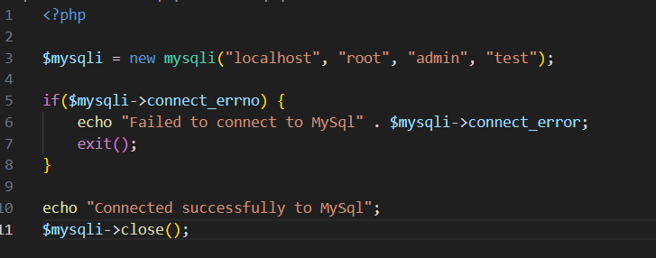

1. How to Install Apache
Installing Apache and Updating.
-
Before Installing the Apache first Update the package index by inserting folloing command:
-
Now Install Apache by firing below command:
-
Start Apache using below command:
-
sudo systemctl start apache2
2. How to install PHP v8.2
-
Before Installing the PHP v8.2 first Update the package index by inserting folloing command:
-
Install PHP v8.2:
-
Verify PHP installed and the version.
3. How to install MySQL
-
Install MySQL:
-
sudo apt install mysql-server
-
Access MySql:
-
After getting inside MYSQL: Now you can create new user:
-
CREATE USER 'username'@'localhost' IDENTIFIED BY 'password';
-
Grant privileges to the USER:
-
GRANT ALL PRIVILEGES ON *.* TO 'username'@'localhost' WITH GRANT OPTION;
FLUSH PRIVILEGES;
-
Create New DATABASE
-
Grant Preivileges to the User to newly created database
-
GRANT ALL PRIVILEGES ON dbname.* TO 'username'@'localhost';
FLUSH PRIVILEGES;
4. How to configure a vhost in Apache
-
Create a new vhost configuration file:
-
sudo nano /etc/apache2/sites-available/example.com.conf
-
Enable the vhost
-
sudo a2ensite example.com.conf
-
Test the configuration
-
sudo apache2ctl configtest
-
sudo systemctl restart apache2
-
View Apache logs
-
sudo tail -f /var/log/apache2/error.log
5. How to test that your LAMP stack is working
-
Create a test PHP File
-
Add index.php
Inside that file add below code.
<?php
// create connection - host, username, password, database
$mysqli = new mysqli("localhost", "challenge", "secret", "challengeDB");
if ($mysqli->connect_errno) {
echo "Failed to connect to MySQL: " . $mysqli->connect_error;
exit();
}
echo "Connected successfully to MySQL";
$mysqli->close();
